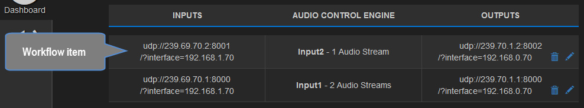
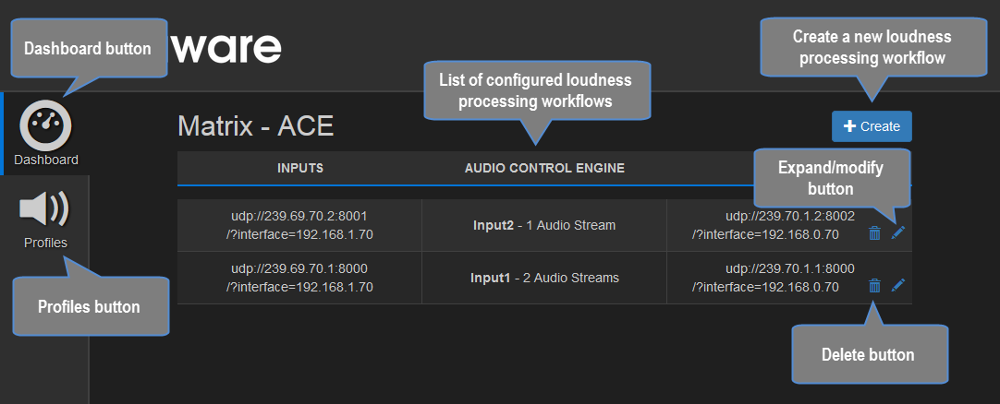

The Dashboard¶
The starting page of the Matrix ACE web user interface is the Dashboard.
Lists the current configuration¶
The Dashboard lists all configured Loudness Processing Workflows , showing input details, the number of audio streams being processed and output details for each workflow.
Create, modify and delete loudness processing workflows¶
From the Dashboard users can create, modify and delete loudness processing workflow.
The image below shows the Dashboard displaying a list of configured loudness processing workflows.
